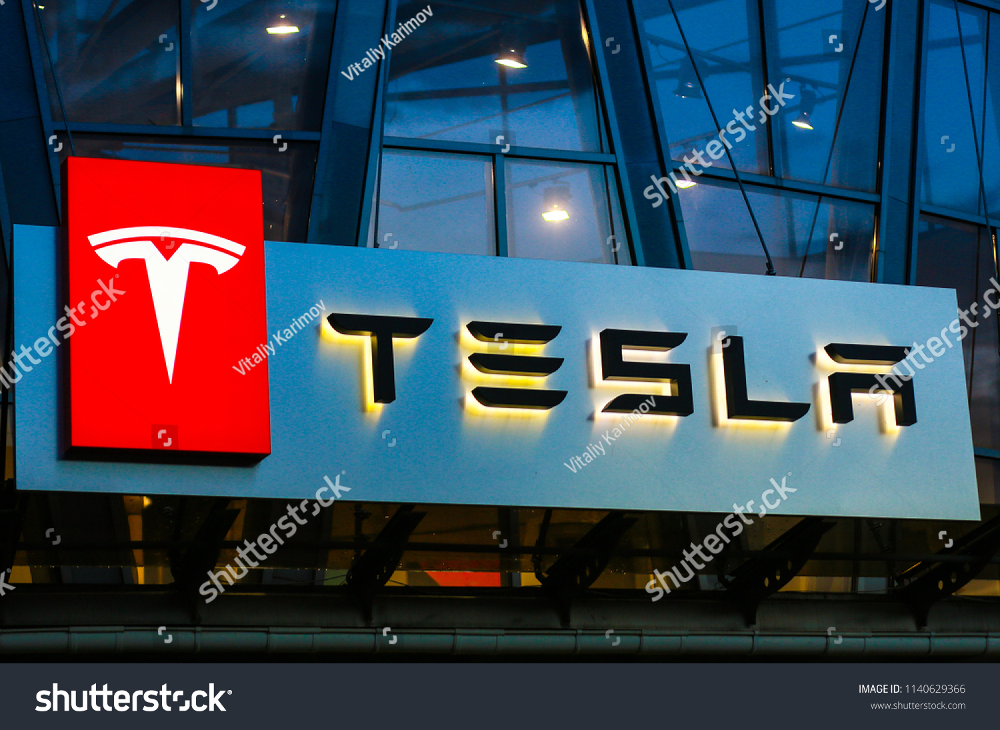

O que são carros autônomos?
Em poucas palavras, é possível dizer que os carros autônomos são veículos que fazem uso da tecnologia, especialmente Inteligência Artificial (AI).
Com isso, esse veículo motorizado é projeto para viajar entre dois pontos, sem a necessidade de esforços de um motorista.
Dessa forma, para ser classificado como autônomo, é preciso que o veículo seja capaz de navegar sem a intervenção humana.
Porém, com o avanço do conceito, os veículos que necessitam de um grau um pouco maior e assistência na condução também são considerados carros autônomos.
Isso se deve pelo fato de que as tecnologias aplicadas são, basicamente, as mesmas, alterando apenas sua forma de integração ao sistema veicular.
Apesar da ideia de veículos autoconduzidos estar ganhando força, a tendência é que sua aplicação ocorra de forma gradual.
Isto é, grande parte das montadoras vêm adicionando aos poucos novas tecnologias que colaborem com a direção humana. A exemplo, temos:
- Ajuste de velocidade e gasto de combustível de acordo com o trajeto;
- Assistência na direção e estacionamento;
- Administração inteligente de frenagem;
- Sistema de detecção de obstáculos;
- Sistema de controle de velocidade;
- Sistema de monitoramento das condições de funcionamento.
Em geral, esse tipo de sistema e Inteligência Artificial já são encontrados em muitos modelos. Porém, para entender melhor o que de fato vem a ser um carro autônomo, é preciso entender a tecnologia utilizada em seu desenvolvimento.
A tecnologia por trás dos carros autônomos
O objetivo dos carros autônomos é dispensar completamente a interferência humana na direção de um veículo.
Ou seja, é necessário chegarmos ao ponto onde a máquina teria absoluto controle do veículo, trajeto e condições de direção.
Para que esse cenário seja uma realidade, algumas inovações tecnológicas já vêm sendo desenvolvidas, e aplicadas, nos carros autônomos:
Inteligência Artificial
Talvez a tecnologia mais relevante no desenvolvimento de um veículo autônomo, a Inteligência Artificial é responsável por captar e analisar diversos dados e sinais de sensores.
Com isso, há um maior controle na condução do veículo, onde o próprio sistema analisar dados como trajeto, velocidade, uso de combustível, bem como a necessidade de manutenção ou reparos.
LIDAR
Os sensores LIDAR nada mais são do que os ‘olhos’ do carro autônomo. Através desses sensores, o sistema pode mapear o ambiente, observando a rota a ser seguida.
Muito utilizada nos veículos autônomos da Google, os sensores são, por outro lado, um dos principais motivos pelo custo da tecnologia autônoma ainda ser tão alto.
Sensores externo
Porém, alguns carros autônomos podem apresentar sensores externos mais simples, como câmeras, radares e sonares.
Dessa forma, os sensores conseguem detectar as características ambientais, repassando esses dados ao sistema do veículo.
Como o Vale do Silício vem investindo na automação veicular
Apesar de haver um entusiasmo com a possibilidade de desenvolvimento e aplicação de carros automotores, a tendência é que as novas tecnologias desse mercado não chamem tanta atenção.
A estratégia visa evitar a criação de grandes expectativas com a automação veicular, especialmente após alguns acidentes em testes com a tecnologia.
Porém, mesmo com os desafios em torno da automação veículo, o Vale do Silício vem apresentando um grande investimento nesse segmento.
Aliás, já é possível notar alguns dos resultados dentro das principais empresas.

Waymo (Google)
Propriedade da empresa matriz, Alphabet, que também controla a Google, a Waymo, fundada em 2009, já atingiu a impressionante marca de 4 milhões de milhas em carros para teste com automação veículo.
Apesar de nunca ter operado uma base comercial para esse mercado, o carro autônomo da empresa já ganhou aprovação para o transporte de passageiros na Califórnia, EUA.
Tesla
A pioneira na fabricação de automóveis no Vale do Silício, a Tesla ainda foi a primeira empresa a introduzir no mercado o piloto automático nível 2.
Além disso, a empresa anunciou que o hardware dos novos veículos é apto para total autonomia. Em outras palavras, com a conclusão do software, a implementação da automação nos veículos da empresa será instantânea.
Para isso, a Tesla fez uso da Inteligência Artificial e suas técnicas – Deep Learning -, coletando dados de milhares de veículos.
Links de sites sobre carros autônomos: